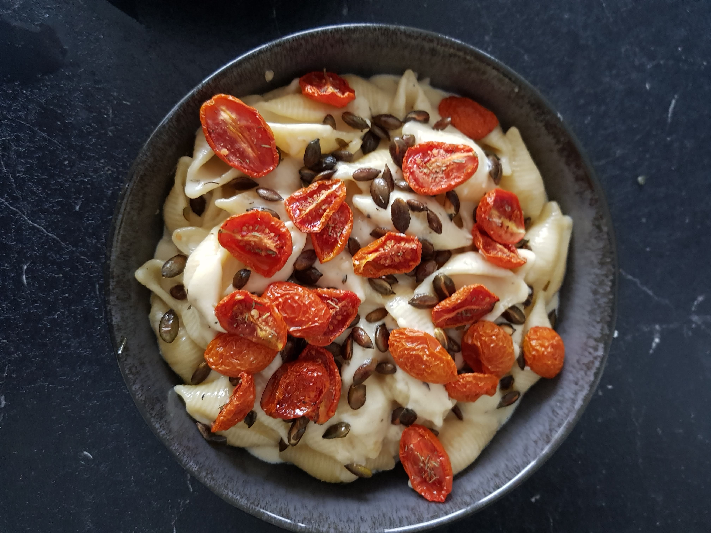

Mac and Cheese

Description
Imagine this a descriptive paragraph about Mac and Cheese. It would have many words describing the cheesy dish. But I can't think of any, so let's get to the reason you're here and keep scrolling.
Ingredients
- 230g pasta of choice
- 200ml cream or 150g cream cheese
- Go nuts on the shredded cheese (Good choices: Parmesan, Kashkaval, Gouda, Cheddar, Gruyere)
- 1 tsp Dijon Mustard
- 1 pinch nutmeg powder
- 4 cloves garlic, minced
- 1 large tbsp butter
- Optional: 250g mushrooms or 100g corn
- Fresh thyme
- 200g cherry tomatoes
- Pumpkin seeds
- Salt and pepper
Steps
- Cut the cherry tomatoes in half, roast them at 180°C for 30 minutes with salt, pepper, garlic powder and oregano.
- Roast pumpkin seeds at 200°C for 10 minutes.
- Cook pasta as indicated on packaging. If using fresh pasta, cook till they float.
- Heat butter and garlic in a pan, stir till very light brown.
- Add Dijon mustard.
- Add mushrooms (optional).
- Pour in the cream or cream cheese, let simmer and add some pasta water if needed.
- Season with nutmeg powder, fresh thyme, salt and pepper.
- Add the shredded cheese and mix.
- Once the pasta is cooked, tranfer them to the cream sauce with some pasta water as needed. Mix well and serve.